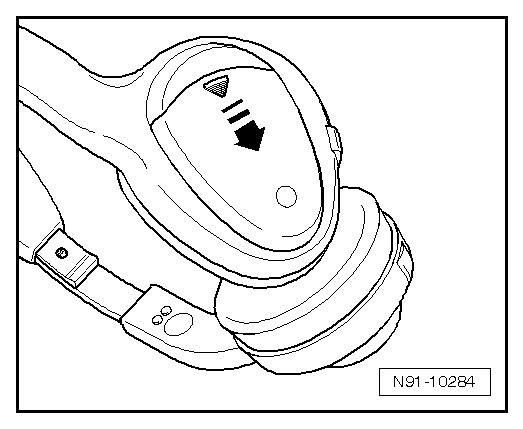
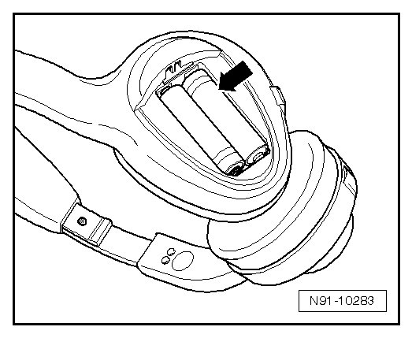

Headphones / Earphones: Service and Repair
Battery in Headphones, Changing
The headphones function using infrared technology They contain a voltage supply off and on switch, a volume control and an LED that indicates operating state.
If the headphones no longer function correctly and the red LED has gone out, the batteries must be replaced. Proceed as follows:
- Open cover on headphones in - direction of arrow -.

- Remove batteries - arrow - and replace with two new, identical "AAA" batteries.

• Note currently valid precautions for disposal of old batteries.
Check batteries for correct polarity when inserting. It is stamped in headphones battery compartment.
- Close cover on headphones.
- Switch headphones on with ON/OFF switch.
The red LED on the headphones must now light up and signal that the headphones are ready to be used.